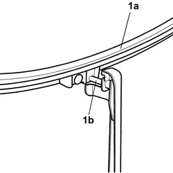

5050B28 WINDSCREEN WIPER BLADE/S - R+R
- Path
- Procedures > 50 AUXILIARY UNITS > 5050 SCREEN WASHERS AND HEADLAMP WASH/WIPE > 5050B WINDSCREEN WASH/WIPE > 5050B28 WINDSCREEN WIPER BLADE/S - R+R
- Kind
- repair procedure (removal / refitting; the operation number is the code)
- Applies to
- all engines; all production periods
- Interactive page
- https://sloeber94.github.io/elrnDB-fCrm/en/#/194000649
Applies to: all engines; all production periods
 Removing
Removing
 Refitting
Refitting- Lift up the front windscreen wiper arm(s).
1. Rotate the front windscreen wiper blade (1a) until the blade is released from the retaining tab (1b) on the wiper arm.
Release the windscreen wiper blade from its housing and remove it from the front windscreen wiper arm.

Applies to: all engines; all production periods
Refitting
Removing- Check that the wiper profile and the windscreen wiper blade are not damaged.
- Fit the windscreen wiper blade in the housing on the windscreen wiper arm.
- Rotate the windscreen wiper blade and secure it to the retaining tab on the windscreen wiper arm.
- Lower the front windscreen wiper arm.
- Check that the windscreen wiper blade is working.